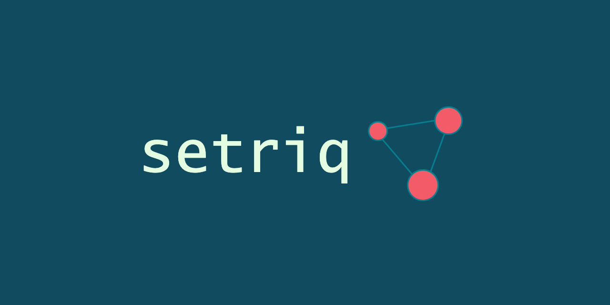

A Python package written in C++ for computing pairwise distances between (immunoglobulin) sequences.
Install#
This package is available on PyPI
pip install setriq
Quickstart#
setriq inherits from the torch philosophy of callable objects. Each Metric subclass is a callable upon
initialisation, taking a list of objects (usually str) and returning a list of float values.
import setriq
metric = setriq.CdrDist()
sequences = [
'CASSLKPNTEAFF',
'CASSAHIANYGYTF',
'CASRGATETQYF'
]
distances = metric(sequences)
The returned list is flat and contains N * (N - 1) / 2 elements, i.e. the lower (or upper) triangle of the distance
matrix. To get the square form of the matrix, use scipy.spatial.distance.squareform on the returned distances.
About#
As the header suggests, setriq is a no-frills Python package for fast computation of pairwise sequence distances, with
a focus on immunoglobulins. It is a declarative framework and borrows many concepts from the popular torch library. It
has been optimized for parallel compute on CPU architectures.
Available distance functions:
CDRdist
Levenshtein
TCRdist
Hamming
Jaro
Jaro-Winkler
Longest Common Substring
Optimal String Alignment
These distance functions are available either through the object-based API (as seen above), which provides the CPU-based
parallelism, or the functional API in setriq.single_dispatch. Unlike the object-based API, the functional API does a
single comparison between two sequences for every call, i.e. it exposes the C++ distance functions without the
parallelism wrapper. This can be useful for integration of setriq with other tools such as PySpark. For example:
from pyspark.sql import SparkSession
from pyspark.sql.functions import udf
from pyspark.sql.types import DoubleType
from setriq import single_dispatch as sd
spark = SparkSession \
.builder \
.appName("setriq-spark") \
.getOrCreate()
df = spark.createDataFrame([('CASSLKPNTEAFF',), ('CASSAHIANYGYTF',), ('CASRGATETQYF',)], ['sequence'])
df = df.withColumnRenamed('sequence', 'a').crossJoin(df.withColumnRenamed('sequence', 'b'))
lev_udf = udf(sd.levenshtein, returnType=DoubleType()) # single dispatch levenshtein distance
df = df.withColumn('distance', lev_udf('a', 'b'))
df.show()
It is important to note, that for setriq.single_dispatch the returned value is always a single float value.
Requirements#
A Python version of 3.7 or above is required, as well as a C++ compiler equipped with OpenMP. The package has been
tested on Linux and macOS. To get the required OpenMP resources, run:
On Linux:
sudo apt install libomp-dev && sudo apt show libomp-dev
On macOS:
brew install libomp llvm
References#
Dash, P., Fiore-Gartland, A.J., Hertz, T., Wang, G.C., Sharma, S., Souquette, A., Crawford, J.C., Clemens, E.B., Nguyen, T.H., Kedzierska, K. and La Gruta, N.L., 2017. Quantifiable predictive features define epitope-specific T cell receptor repertoires. Nature, 547(7661), pp.89-93. (https://doi.org/10.1038/nature22383)
Jaro, M.A., 1989. Advances in record-linkage methodology as applied to matching the 1985 census of Tampa, Florida. Journal of the American Statistical Association, 84(406), pp.414-420.
Levenshtein, V.I., 1966, February. Binary codes capable of correcting deletions, insertions, and reversals. In Soviet physics doklady (Vol. 10, No. 8, pp. 707-710).
python-Levenshtein (https://github.com/ztane/python-Levenshtein)
Thakkar, N. and Bailey-Kellogg, C., 2019. Balancing sensitivity and specificity in distinguishing TCR groups by CDR sequence similarity. BMC bioinformatics, 20(1), pp.1-14. (https://doi.org/10.1186/s12859-019-2864-8)
Van der Loo, M.P., 2014. The stringdist package for approximate string matching. R J., 6(1), p.111.
Winkler, W.E., 1990. String comparator metrics and enhanced decision rules in the Fellegi-Sunter model of record linkage.